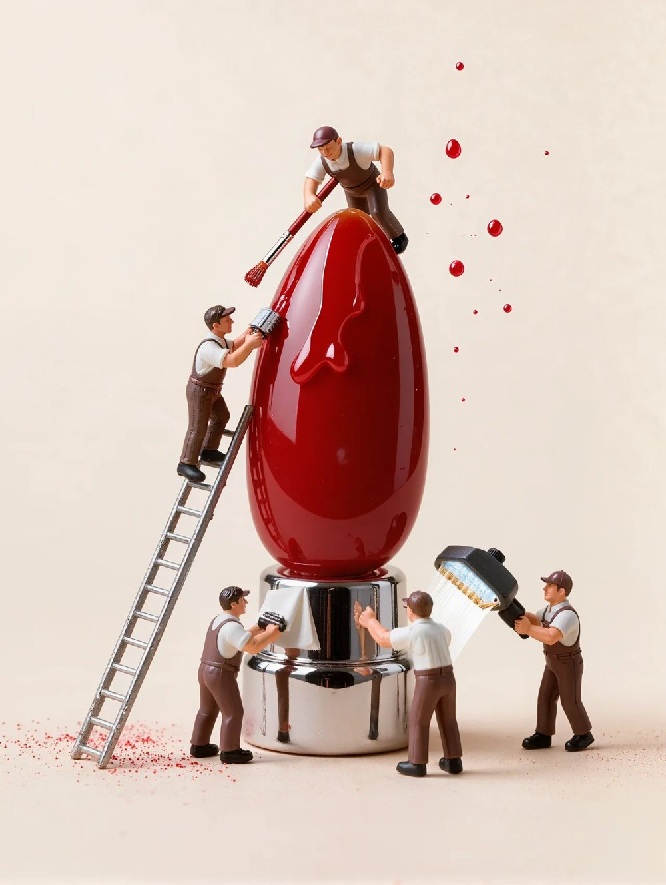

פדיקור טיפולי לסוכרתיים
פדיקור טיפולי לסוכרתיים: בטיחות לפני יופי
לסוכרתיים כף הרגל היא אזור רגיש: התחושה עלולה להיות ירודה, הריפוי איטי יותר, ופצע קטן יכול להפוך לבעיה גדולה. לכן פדיקור לסוכרתיים אצלי הוא טיפול רפואי-קוסמטי עם כללים ברורים, לא פדיקור יופי.

מה זה הטיפול
פדיקור טיפולי הוא טיפול בכף הרגל שמטרתו בריאות: הסרה מבוקרת של עור מעובה ויבלות, כולל טיפול בגורם הלחץ שיצר אותן, ניקוי ודילול ציפורניים מעובות, החדרת חומרים אנטי-פטרייתיים בפטרת ציפורן, ושחרור ציפורן חודרנית, ובמידת הצורך שילוב מגנט BS שמכוון את הציפורן לצמיחה בריאה. לסוכרתיים אני עובדת עם חומרים עדינים בלבד, ללא חומצות אגרסיביות, לא חותכת עור חי, ורק עם כלים חד-פעמיים או מעוקרים באוטוקלב.
למי זה מתאים
לכל מי שחיה עם סוכרת מסוג 1 או 2, וגם למי שסובלת מבעיות בזרימת הדם, מנוירופתיה או מעור יבש וסדוק בכפות הרגליים. הטיפול מתאים גם למבוגרים שמתקשים להגיע לכפות הרגליים בעצמם. אם יש פצע פתוח, כיב או זיהום פעיל, אני מפנה קודם לרופא, ורק אחרי אישור ממשיכה בטיפול.
איך נראה הביקור אצלי
בדיקת עור ותחושה
לפני כל טיפול, לא רק בראשון: אני בודקת את מצב העור, את התחושה ואת זרימת הדם, ושואלת על רמות הסוכר והתרופות.
הטיפול, כשעה
ניקוי, הסרה מבוקרת של עור מעובה, טיפול בציפורניים ובבעיות שנמצאו, וקרם טיפולי. בלי השריה ממושכת ובלי חיתוך אגרסיבי.
הנחיות לבית
איך לבדוק את כפות הרגליים בעצמך, אילו נעליים וגרביים מתאימות, ומה עושים אם מופיע פצע.
תחזוקה כל 4 עד 6 שבועות
עור מעובה חוזר, ולכן טיפול קבוע מונע יבלות ופצעים. מצבים כמו פטרת דורשים סדרה ומעקב.
שאלות שאני נשאלת הרבה
פדיקור טיפולי בטוח לסוכרתיים?
כן, כשהוא נעשה נכון: בלי חומצות חזקות, בלי חיתוך עור חי, עם כלים סטריליים ובדיקה לפני כל טיפול. זה בדיוק מה שאני מקפידה עליו.
מה ההבדל בין פדיקור טיפולי לפדיקור רגיל?
פדיקור רגיל מתמקד במראה. פדיקור טיפולי מתמקד בבעיות: יבלות, פטריות, ציפורניים חודרניות ועור סדוק, עם ידע בפיזיולוגיה של כף הרגל.
אפשר לשים לק אחרי הטיפול?
אפשר, אבל בפטרת ציפורן עדיף להימנע כדי לתת לחומרים לעבוד ולציפורן לנשום.
כל כמה זמן צריך להגיע?
לרוב כל ארבעה עד שישה שבועות. בטיפול ביבלת או בציפורן חודרנית אני קובעת מעקב אחרי שבועיים עד שלושה.
רוצה לדעת אם זה מתאים לך?
האבחון בטיפול הראשון ללא עלות. חצי שעה, בלי התחייבות, ויוצאים עם תוכנית ברורה.
נכתב על ידי רותם גוטובסקי, קוסמטיקאית פרא-רפואית מוסמכת (P.M.E). המידע כללי ואינו מחליף ייעוץ רפואי.